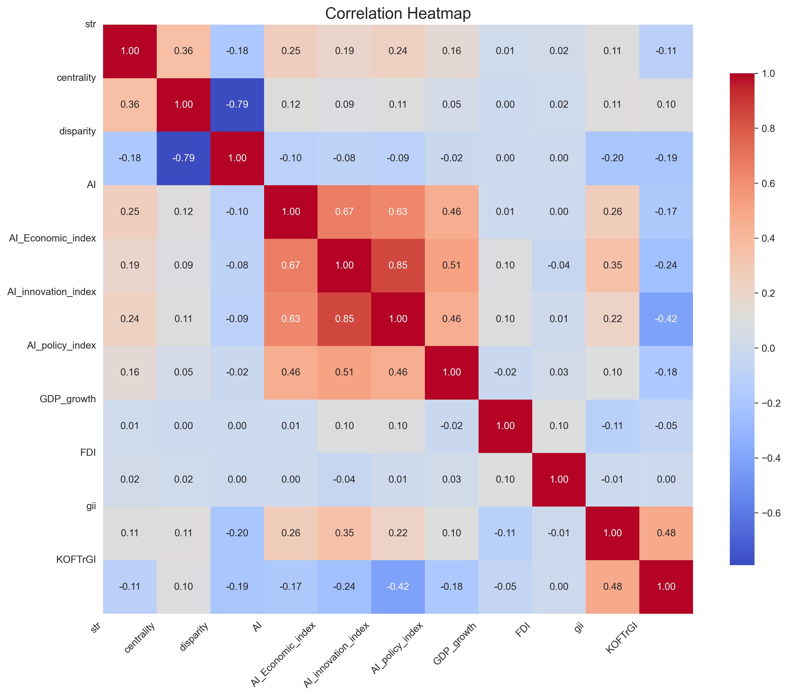

Vibe Coding 作品集
My Vibe Coding Works

01
简历一页纸？不如动态个人主页
Dynamic Personal Homepage
简历是阶段性的静态展现，在这个成长极快的时代，简历更新的速度难免跟不上个人迭代的速度，因此本人第一个vibe coding作品决定手搓一个《个人主页》，用持续更新的个人履历和近期关注，来替代个人简历。用图+文的形式，留下直观的第一印象。

02
Chat EXCEL
AI-Powered Data Visualization Tool
想做趋势图、散点图，厌倦了学一套漂亮的python代码再复刻绘制，或是不想用数据分析软件里没有特色的图表模板。试着用AI coding, 上传你的.dta .excel数据，简单明了的表述你的需求，接下来就是去喝一杯咖啡，等着验收成果。